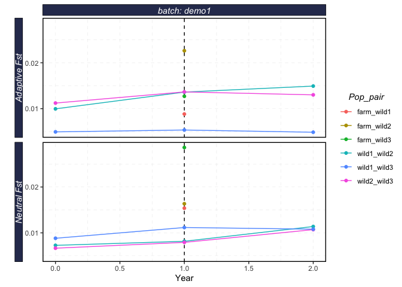
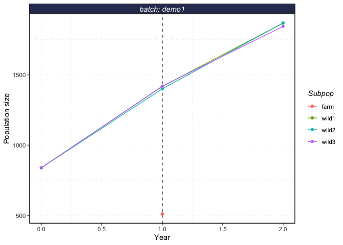

Repo for hosting R package for shellfish genetic risk modeling
This package allows for agent based modeling of shellfish genetic risk modeling. The model itself runs in Python, but users can use this package to both run and process the results in R.
Installation
To install shellfishrisks from GitHub run
# install.packages("devtools")
devtools::install_github("nwfsc-cb/shellfish-genetic-risks")Note that this requires installing the devtools package prior to installing shellfishrisks
This package also requires a working Python 3.X installation. The model is currently built assuming users have an Anaconda installation of Python. Users unfamiliar with installing Python should install Anaconda and Python 3.X following the instructions here. If you are familiar enough with Python to have strong opinions about the type of Python installation you would like (i.e. something other than Anaconda) we shall assume you can do so without our guidance.
We won’t kid you. Users unfamiliar with Python installation may find the process extremely daunting . We have tried to make this process as painless as possible. The package is designed assuming use of Anaconda. We then interface with Python through R using the reticulate package. By default, reticulate automatically creates and uses a Conda (Anaconda) environment called r-reticulate. The packages attempts to install any missing and required Python packages the first time the package is run, so if you have not previously installed the required Python packages you will need a working internet connection.
See the example below for the workflow needed to use this package
Installing Python Packages
shellfishrisks::install_pypkgs() installs any missing and required Python packages
Note that even if you have previously installed packages in another Python environment the first time you run this you will likely have to install packages again into the r-reticulate Conda environment
For various reasons, if think you need to install Python libraries, you need to run
shellfishrisks::install_pypkgs()BEFORE calling
Once you have run shellfishrisks::install_pypkgs(), YOU MUST RESTART R COMPLETELY (e.g. exit RStudio and restart it) prior to calling
Example
This example shows you the sequence of steps needed to run shellfishrisks.
See the vignettes in the “Articles” tab for other examples on running multiple batches at once, or running based on a control file.
set.seed(42)
library(shellfishrisks) # now load shellfishrisks after installing required python packages
# If you get an error about a missing Python package, restart R completely, and then follow "Installing Python Packages" instructions
shellfishrisks::load_shellfish()
#> shellfishrisks is using Conda environment r-reticulate
# Set options
reps <- 1
coreid <- 1
# All the _years should ideally be set to 50. However, that takes >24 hours to run. For testing, we recommend setting years to 1 to ensure the installation is working properly.
pre_farm_years <- 1
farm_years <- 1
post_farm_years <- 1
# Run shellfishrisk model: this takes about 20min with these
# demonstration settings
shellfishrisk(
batch = "demo1",
reps = reps,
coreid = coreid,
pre_farm_years = pre_farm_years,
farm_years = farm_years,
post_farm_years = post_farm_years,
wild_N_init = 100,
prob_repro_by_month = list('Jan' = 0, 'Feb' = 0, 'Mar' = 0, # for wild reproduction
'Apr' = 1, 'May' = 0, 'Jun' = 0,
'Jul' = 0, 'Aug' = 0, 'Sep' = 0,
'Oct' = 0, 'Nov' = 0, 'Dec' =0)
)
results <- serve_shellfish(batches = c("demo1")) # read the results stored in .txt files into a list object
str(results)
#> List of 9
#> $ AFs :'data.frame': 500 obs. of 11 variables:
#> ..$ coreid : int [1:500] 1 1 1 1 1 1 1 1 1 1 ...
#> ..$ Srep : int [1:500] 1 1 1 1 1 1 1 1 1 1 ...
#> ..$ Rep : int [1:500] 0 0 0 0 0 0 0 0 0 0 ...
#> ..$ Year : int [1:500] 0 0 0 0 0 0 0 0 0 0 ...
#> ..$ Subpop : chr [1:500] "wild1" "wild1" "wild1" "wild1" ...
#> ..$ Locus_index : int [1:500] 0 0 1 1 2 2 3 3 4 4 ...
#> ..$ Allele : int [1:500] 0 1 0 1 0 1 0 1 0 1 ...
#> ..$ Adaptive : chr [1:500] "True" "True" "True" "True" ...
#> ..$ Adv : chr [1:500] "True" "False" "True" "False" ...
#> ..$ AlleleFrequency: num [1:500] 0.8874 0.1126 0.9607 0.0393 0.8945 ...
#> ..$ batch : chr [1:500] "demo1" "demo1" "demo1" "demo1" ...
#> $ bstock_report :'data.frame': 9 obs. of 5 variables:
#> ..$ coreid : int [1:9] 1 1 1 1 1 1 1 1 1
#> ..$ Rep : int [1:9] 0 0 0 0 0 0 0 0 0
#> ..$ Year : int [1:9] 1 1 1 1 1 1 1 1 1
#> ..$ IndID_survivedAgeX: num [1:9] 91 42 30 31 84 81 29 90 78
#> ..$ batch : chr [1:9] "demo1" "demo1" "demo1" "demo1" ...
#> $ harvest :'data.frame': 3 obs. of 6 variables:
#> ..$ coreid : int [1:3] 1 1 1
#> ..$ Srep : int [1:3] 1 1 1
#> ..$ Rep : int [1:3] 0 0 0
#> ..$ Year : int [1:3] 0 1 2
#> ..$ IndsHarvested: int [1:3] 0 0 0
#> ..$ batch : chr [1:3] "demo1" "demo1" "demo1"
#> $ life_hist_report:'data.frame': 123342 obs. of 13 variables:
#> ..$ coreid : int [1:123342] 1 1 1 1 1 1 1 1 1 1 ...
#> ..$ Rep : int [1:123342] 0 0 0 0 0 0 0 0 0 0 ...
#> ..$ Year : int [1:123342] 0 0 0 0 0 0 0 0 0 0 ...
#> ..$ Month : chr [1:123342] "Jan" "Jan" "Jan" "Jan" ...
#> ..$ Subpop : chr [1:123342] "wild1" "wild1" "wild1" "wild1" ...
#> ..$ IndID : num [1:123342] 1 2 3 4 5 6 7 8 9 10 ...
#> ..$ Sex : int [1:123342] 2 2 2 2 2 1 2 2 1 2 ...
#> ..$ CohortYear : num [1:123342] 0 0 0 0 0 0 0 0 0 0 ...
#> ..$ Age : num [1:123342] 4.17 9.33 2.5 2.83 1.5 ...
#> ..$ Mother_id : num [1:123342] 0 0 0 0 0 0 0 0 0 0 ...
#> ..$ Father_id : num [1:123342] 0 0 0 0 0 0 0 0 0 0 ...
#> ..$ meanParentAge: num [1:123342] 0 0 0 0 0 0 0 0 0 0 ...
#> ..$ batch : chr [1:123342] "demo1" "demo1" "demo1" "demo1" ...
#> $ log :'data.frame': 3 obs. of 10 variables:
#> ..$ coreid : int [1:3] 1 1 1
#> ..$ rep : int [1:3] 0 0 0
#> ..$ farm_phase: chr [1:3] "pre-farm" "during-farm" "post-farm"
#> ..$ year : int [1:3] 0 1 2
#> ..$ wild1_size: int [1:3] 730 1206 1572
#> ..$ wild2_size: int [1:3] 710 1203 1570
#> ..$ wild3_size: int [1:3] 722 1201 1587
#> ..$ farm_size : int [1:3] NA 498 NA
#> ..$ time_stamp: chr [1:3] "2021-09-02_22:29:54" "2021-09-02_22:32:57" "2021-09-02_22:36:50"
#> ..$ batch : chr [1:3] "demo1" "demo1" "demo1"
#> $ pop_pair_rvars :'data.frame': 36 obs. of 8 variables:
#> ..$ coreid : int [1:36] 1 1 1 1 1 1 1 1 1 1 ...
#> ..$ Srep : int [1:36] 1 1 1 1 1 1 1 1 1 1 ...
#> ..$ Rep : int [1:36] 0 0 0 0 0 0 0 0 0 0 ...
#> ..$ Year : int [1:36] 0 0 0 0 0 0 0 0 0 1 ...
#> ..$ Pop_pair: chr [1:36] "wild1_wild2" "wild1_wild2" "wild1_wild2" "wild2_wild3" ...
#> ..$ Rvar : chr [1:36] "Fst" "Fst_aL" "Fst_nL" "Fst" ...
#> ..$ Value : num [1:36] 0.00823 0.00996 0.00728 0.00831 0.01122 ...
#> ..$ batch : chr [1:36] "demo1" "demo1" "demo1" "demo1" ...
#> $ pop_rvars :'data.frame': 40 obs. of 8 variables:
#> ..$ coreid: int [1:40] 1 1 1 1 1 1 1 1 1 1 ...
#> ..$ Srep : int [1:40] 1 1 1 1 1 1 1 1 1 1 ...
#> ..$ Rep : int [1:40] 0 0 0 0 0 0 0 0 0 0 ...
#> ..$ Year : int [1:40] 0 0 0 0 0 0 0 0 0 0 ...
#> ..$ Subpop: chr [1:40] "wild1" "wild1" "wild1" "wild1" ...
#> ..$ Rvar : chr [1:40] "mfit" "popsize" "het" "ar" ...
#> ..$ Value : num [1:40] 0.997 839 1 1800 0.996 ...
#> ..$ batch : chr [1:40] "demo1" "demo1" "demo1" "demo1" ...
#> $ temp_rvars :'data.frame': 3 obs. of 7 variables:
#> ..$ coreid: int [1:3] 1 1 1
#> ..$ Srep : int [1:3] 1 1 1
#> ..$ Rep : int [1:3] 0 0 0
#> ..$ Subpop: chr [1:3] "wild1" "wild2" "wild3"
#> ..$ Rvar : chr [1:3] "Fst" "Fst" "Fst"
#> ..$ Value : num [1:3] 0.000103 0.00032 -0.000164
#> ..$ batch : chr [1:3] "demo1" "demo1" "demo1"
#> $ survival : grouped_df [11 × 4] (S3: grouped_df/tbl_df/tbl/data.frame)
#> ..$ batch : chr [1:11] "demo1" "demo1" "demo1" "demo1" ...
#> ..$ age : num [1:11] 0 1 2 3 4 5 6 7 8 9 ...
#> ..$ survival : num [1:11] 0.5304 0.3782 0.0432 0.8119 0.6364 ...
#> ..$ survivorship: num [1:11] 1 0.53045 0.20059 0.00866 0.00703 ...
#> ..- attr(*, "groups")= tibble [1 × 2] (S3: tbl_df/tbl/data.frame)
#> .. ..$ batch: chr "demo1"
#> .. ..$ .rows: list<int> [1:1]
#> .. .. ..$ : int [1:11] 1 2 3 4 5 6 7 8 9 10 ...
#> .. .. ..@ ptype: int(0)
#> .. ..- attr(*, ".drop")= logi TRUE
plot_shellfish(results, type = "rvars")
plot_shellfish(results, type = "fst")
plot_shellfish(results, type = "popsize")